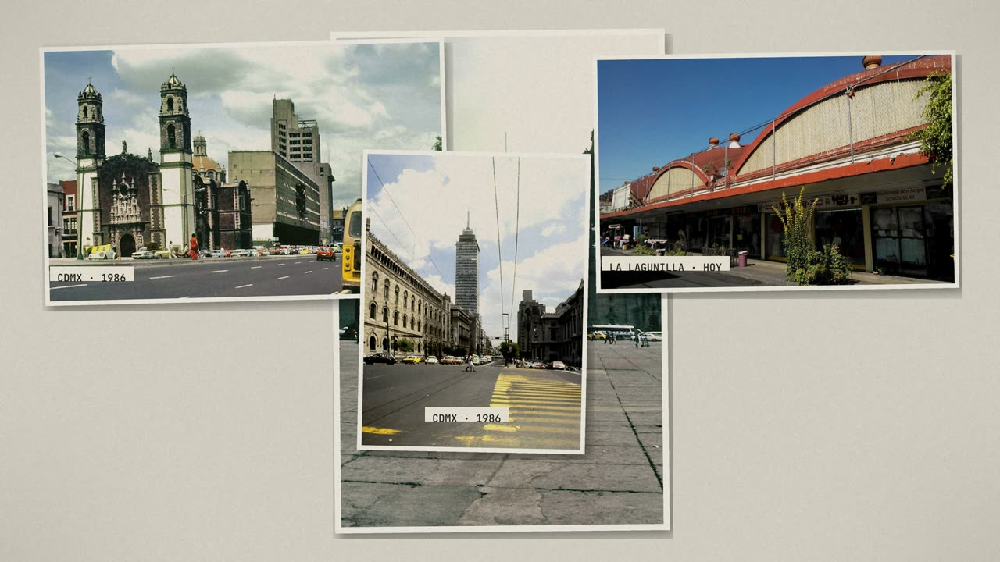
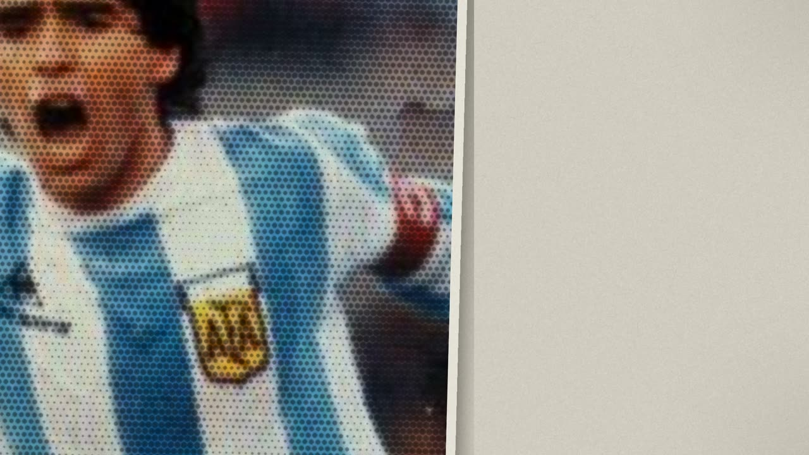
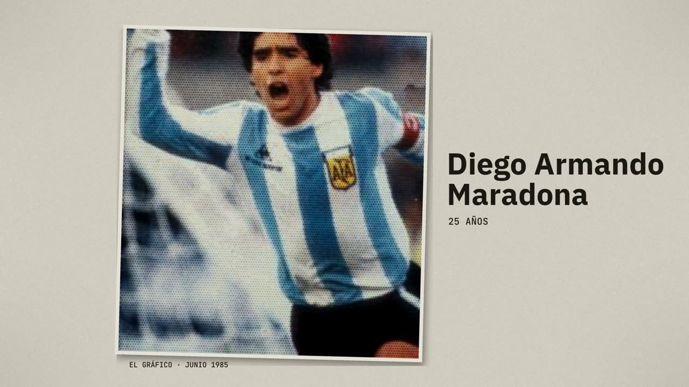
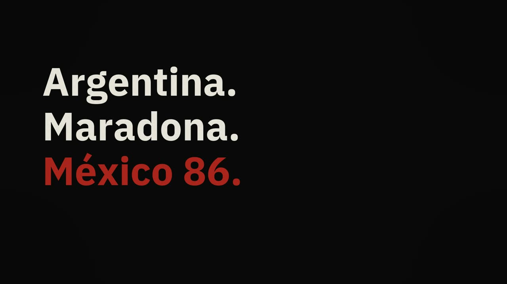
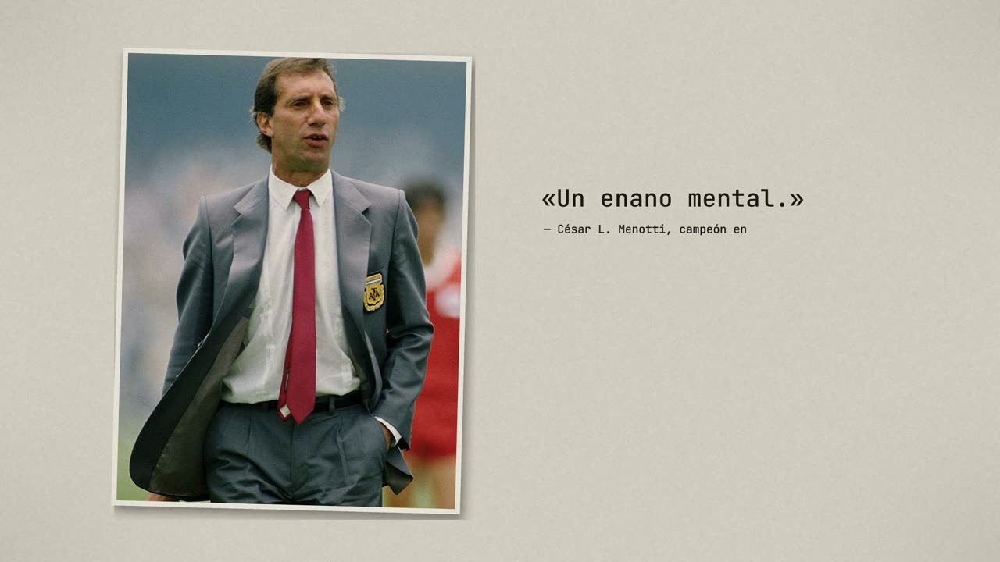
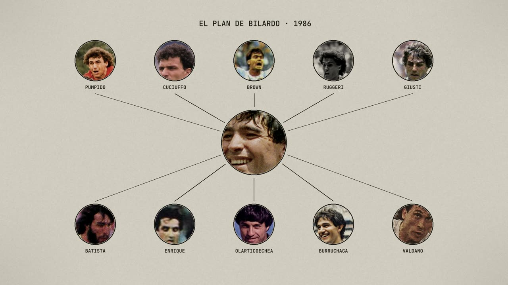
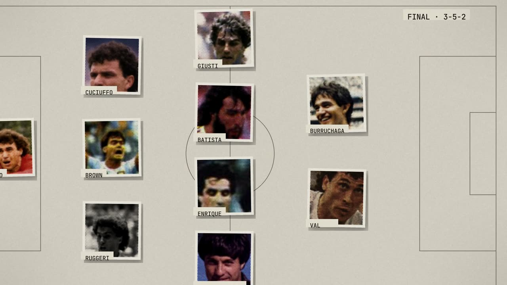
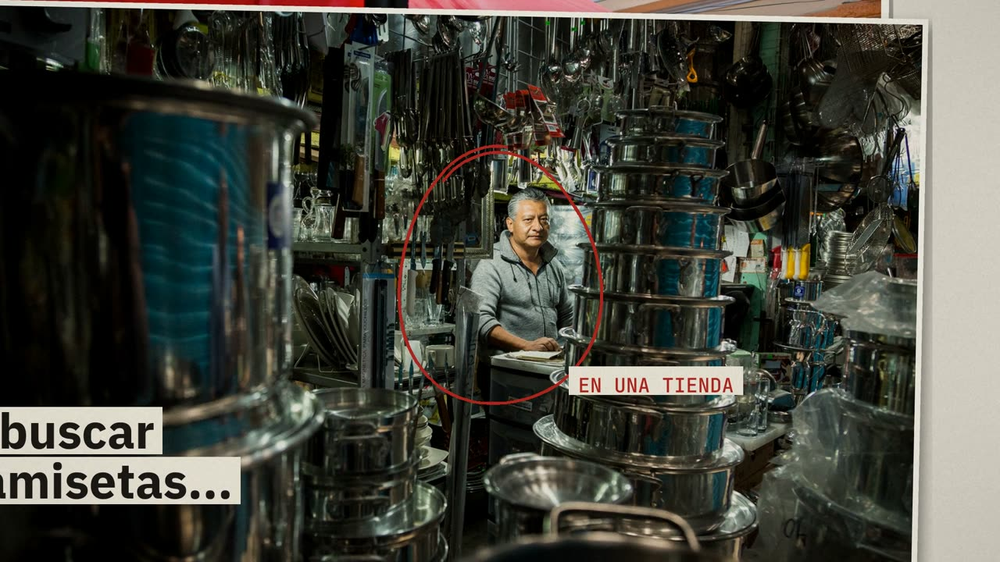
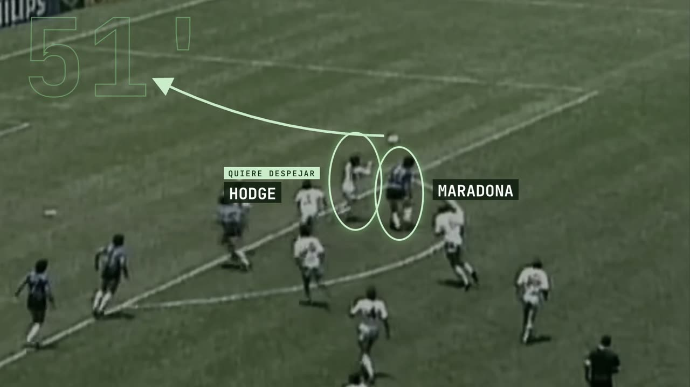
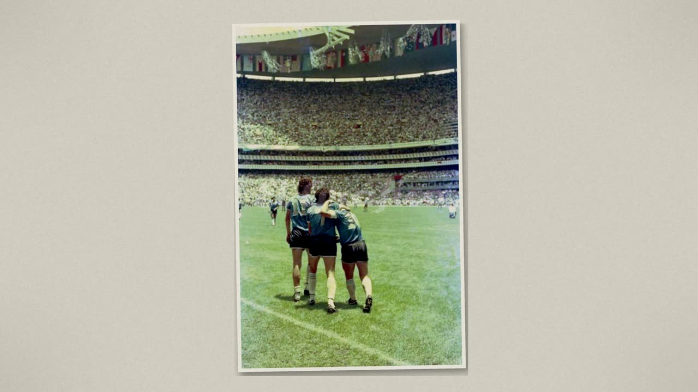

Cada plano tiene un nombre en clave. Para pedir algo, se escribe la escena, la clave y el momento del narrador
(la frase exacta con @). Los que están marcados nuevo todavía no existen: se construyen a pedido.
Escena 22 · ARMADO · camiseta azul lisa → en "@les cosieron el escudo" aparece el escudo cosido → en "@les plancharon" se planchan los números
Reglas de la casa
Antes de elegir un plano
Cámara fijaNada de paneos de relleno. Un zoom solo cuando hay algo que mostrar (la cinta, el escudo, la cara).
Sin spoilersLa foto es del momento que se cuenta. Nada de la copa antes de la final.
La foto mandaPrimero la imagen real; el texto acompaña, chico y a máquina. Títulos grandes solo para nombres y momentos.
Sin tachadosNada de líneas rojas sobre el texto. El rojo es para marcar en la foto.
Fotos transformadasPrensa o archivo: impresas sobre la mesa, recortadas, con crédito. Nunca borrar marcas de agua.
Audio original muteadoSalvo un ARCHIVO SONORO elegido (relato, llamada, entrevista), y solo la parte que importa.
Ya los tenemos
Planos listos
Cuadros reales de Argentina 86.

MESAFotos sobre la mesalisto
Johnny Harris · archivo de redacción
Fotos impresas con borde, apoyadas sobre papel. Van apareciendo cuando el narrador las nombra.
Para contexto: ciudades, lugares, personas. El plano base del canal.

ZOOMZoom al detallelisto
The Kid Stays in the Picture
La cámara va a un detalle de la foto justo cuando se nombra, y lo señala con una línea fina y un rótulo.
Una vez por escena, como mucho. Ej.: la cinta de capitán.

REVISTARecorte de revistalisto
El Gráfico · imprenta de los 80
Foto chica o vieja con trama de puntos de imprenta. Convierte la baja resolución en textura.
Tapas y fotos de diario. Se le saca el logo y los títulos de la tapa.

TITULOTipografía contundentelisto
Saul Bass
Palabras grandes sobre negro o papel, que entran de golpe cuando el narrador las dice.
Nombres, frases clave, el cierre del hook. Poco y fuerte.

MAQUINACita a máquinalisto
Documento de archivo
La frase textual se tipea letra por letra, con su firma abajo, al lado de la foto de quien la dijo.
Citas, declaraciones, titulares de diario.

DIAGRAMADiagrama simétricolisto
Wes Anderson
Retratos en círculo ordenados en espejo, con líneas que se dibujan. Muestra una relación o una idea.
"Todos para uno", rivales, quién le pasó a quién.

CANCHAFormación en tintalisto
Wes Anderson · pizarra de técnico
Cancha dibujada a mano sobre el papel; cada jugador aparece en su puesto cuando se lo nombra.
Formaciones, cambios tácticos.

MARCAMarcador rojolisto
Vox, sin que se note
Un círculo o una flecha a mano sobre la foto. La cámara va hacia lo marcado y vuelve en corte.
Para señalar a alguien o algo dentro de una foto con mucha gente.

JUGADAJugada intervenidalisto
Análisis de TV · fantasma
El clip del partido se congela, se oscurece y se marcan los jugadores con óvalos, flechas y nombres.
Explicar un gol o una jugada. Ej.: la mano de Dios.

FOTOFoto solalisto
BBC · Herzog
Una sola foto, quieta, impresa sobre la mesa. Silencio visual para que hable el narrador.
Momentos emotivos, antes de una frase clave.
Relato de Víctor Hugo, escena muda, subtítulo a máquina
RELATOArchivo sonorolisto
Radio · archivo
El narrador se calla y suena el audio real; abajo, el texto a máquina.
Relatos, llamadas, entrevistas. Solo el fragmento que importa.
A construir
Planos nuevos
Animaciones con intención: se mueve solo lo que cuenta algo, como lo haría un documentalista.
ARMADOObjeto que se armanuevo
Gilliam · recortes de papel
Un objeto recortado que se completa por capas al ritmo de la voz: camiseta lisa, después el escudo cosido, después el número planchado.
La camiseta azul de México 86. También botines, entradas, carnets.
RECORTEPersonaje articuladonuevo
Terry Gilliam · Monty Python
Una foto real recortada (Diego) con una parte que se mueve: el brazo con el tubo del teléfono, el cable que se estira, ondas de sonido. Animación rudimentaria a propósito.
Diego en México hablando con su mamá. Gestos que la foto no tiene.
RUTAMapa que se trazanuevo
Johnny Harris
Mapa de papel; una línea roja une dos lugares mientras el narrador habla, con la distancia o el tiempo a máquina.
México D.F. → Buenos Aires, Malvinas, el camino de sedes del Mundial.
DOCUMENTOPapel que se leenuevo
Johnny Harris · expediente
Un documento, carta o artículo apoyado en la mesa; la cámara baja a la línea que importa y se resalta.
Contratos, telegramas, la planilla del partido, el catálogo de Sotheby's.
CLASIFICACIONObjetos ordenadosnuevo
Wes Anderson
Objetos iguales en grilla simétrica, cada uno con su rótulo; uno se destaca.
"Compraron 38 camisetas", los 22 convocados, las 5 asistencias de Diego.
PROFUNDIDADFoto en capasnuevo
The Kid Stays in the Picture
La persona se separa del fondo y avanza unos milímetros. Muy de vez en cuando: la regla sigue siendo cámara fija.
Un solo momento por video, el más importante.
Cómo pedirlo
Ejemplos
Escena 22 · ARMADO · camiseta azul lisa → "@les cosieron el escudo" escudo → "@les plancharon" el 10 plateado
Escena nueva · RELATO · llamada de Diego con su mamá: solo cuando hablan ellos, sin el periodista
→ encima RECORTE: Diego en México con el tubo del teléfono, el cable se estira hacia una RUTA México → Buenos Aires
Escena 10 · ZOOM · foto de El Gráfico 1985 → "@la cinta" ir a la cinta → rótulo CAPITÁN